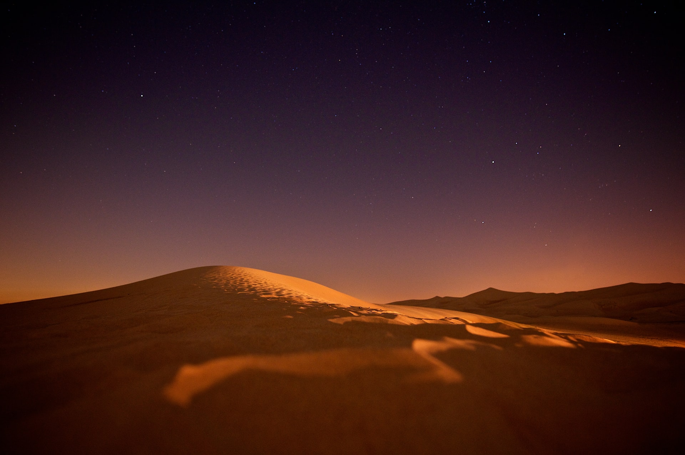
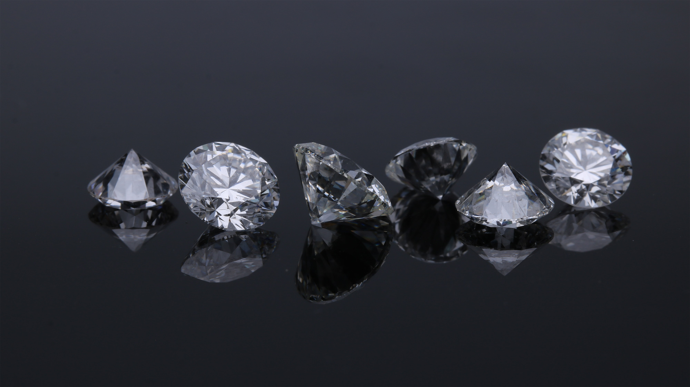
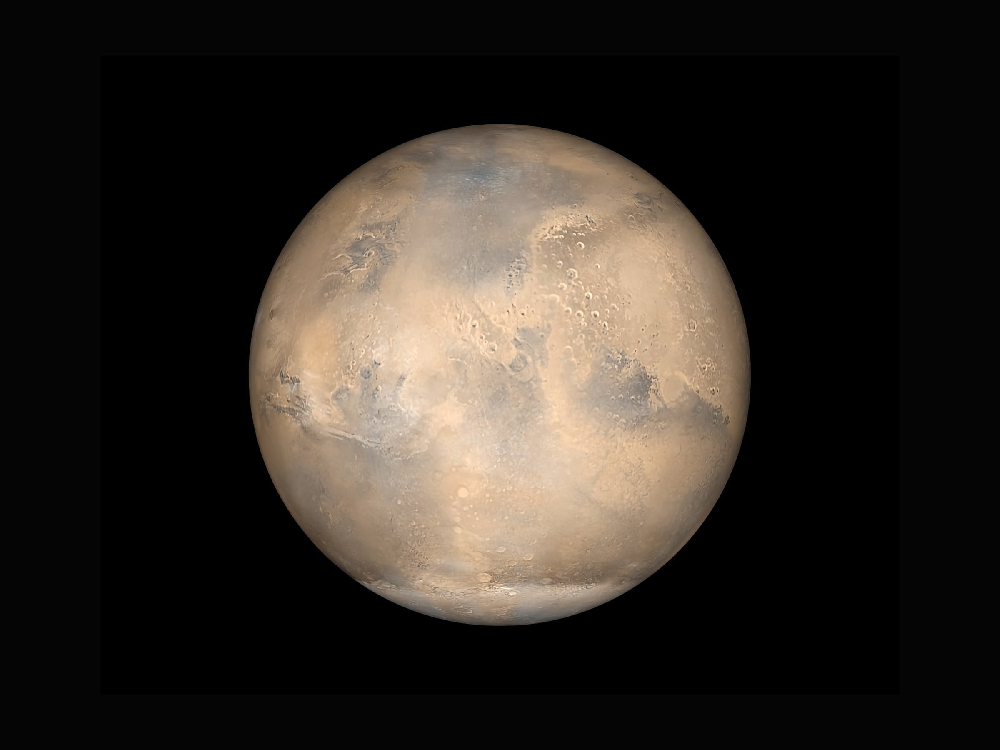

Kosmos wokół nas. 5 ciekawostek o kosmosie
Wstęp
Ludzie interesowali się przestrzenią kosmiczną od zarania dziejów. Od wieków rozmyślali na jej temat oraz obserwowali ją za pomocą specjalnych urządzeń. Wraz z rozwojem technologii zaczęli wysyłać w przestrzeń pozaziemską misje załogowe, sondy oraz teleskopy kosmiczne, za pomoca których badali odległe zakątki wszechświata. Mimo wszystko, można śmiało rzec, że o kosmosie nie wiemy tak naprawdę nic. Skąd się wziął wszechświat i jak to możliwe, że z niczego? Co się tak naprawdę wydarzyło 14 miliardów lat temu? Czy wszechświat kiedyś się skończy i jaki nas wtedy czeka los? Tak wiele pytań, na które nie znamy odpowiedzi. Kosmos wciąż skrywa wiele tajemnic. Oto niektóre z nich.
1. Czarna dziura w centrum Drogi Mlecznej

W centrum Drogi Mlecznej znajduje się czarna dziura. Szacuje się, że ma ona masę 4 miliony razy większą od Słońca. Powyżej znajduje się pierwsze zdjęcie czarnej dziury w centrum Drogi Mlecznej. W świecie nauki ma ono przełomowe znaczenie. Historyczne zdjęcie zostało zrobione dnia 12 maja 2022 i jest pierwszym bezpośrednim wizualnym potwierdzeniem istnienia czarnej dziury w centrum Drogi Mlecznej. Widać na nim cień czarnej dziury i jasny pierścień tuż obok horyzontu zdarzeń czarnej dziury. Rozmiar cienia czarnej dziury ma około 52 mikrosekundy łuku na niebie. Co ciekawe, rozmiar pierścienia zgadza się z przewidywaniami ogólnej teorii względności Einsteina. Ten obraz z pewnościa pomoże zrozumieć naukowcom, co się dzieje w centrum naszej galaktyki.
2. Więcej jest gwiazd czy ziaren piasku na Ziemi?
Wydawać by się mogło, że na to pytanie nie jesteśmy w stanie odpowiedzieć. Udało się tego jednak dokonać astronomom z Australii. Szacuje się, że w całym widzialnym wszechświecie znajduje się 2 biliony galaktyk (2 000 000 000 000), z których każda zawiera średnio kilkaset miliardów gwiazd. To daje niewyobrażalną ilość 200 tryliardów 200 000 000 000 000 000 000 000) gwiazd w całym wszechświecie. Ilość ziarenek piasku na Ziemi szacuje się na około 5 tryliardów, czyli 5 000 000 000 000 000 000 000. To 10 razy więcej, niż ziarenek piasku na Ziemi. Z kolei w jednym ziarnku piasku jest więcej atomów niż gwiazd we wszechświecie.
3. Deszcze diamentów na Jowiszu i Saturnie
Na Jowiszu i Saturnie występują deszcze diamentów, zaś w dolnych warstwach atmosfery tych planet znajdują się ogromne diamenty. Jest to możliwe w wyniku kombinacji odpowiednich temperatur oraz wysokiego ciśnienia w atmosferze, jednak proces powstawania diamentów jest nieco inny niż na przykład na Ziemi. Dzięki częstym potężnym burzom na obu planetach węglowodory dzięki wysokiemu ciśnieniu i temperaturze zmieniają się w mikroskopijne diamenty, następnie dochodzi do opadów takiego diamentowego deszczu, który zmienia się w ciecz kierując się w stronę jądra planety, a następnie częściowo powraca do atmosfery tworząc tam ogromne diamenty.
4. Największa znana gwiazda, UY Scuti w porównaniu do słońca

Największa znana gwiazda UY Scuti znajduje się w gwiazdozbiorze Tarczy. Ma objętość 5 miliardów razy większą od objętości Słońca. Jej szacowany promień wynosi 941 promieni Słońca. Jest również 340 000 razy jaśniejsza. Dla porównania, gdyby Ziemia była kulą o średnicy 20 centymetrów, Słońce miałoby 22,25 metra średnicy (wysokość 7-piętrowego budynku), a rozmiary UY Scuti przekraczałyby 38 kilometrów. Pomimo swojego rozmiaru, UY Scuti nie jest uważana za hiperolbrzyma. Do tego potrzebna jest obecność widma cięższych pierwiastków w atmosferze, dowodzących niestabilności atmosfery oraz szybkiej utraty masy. Ponadto pomiary z 2018 roku dowiodły, że gwiazda znajduje się zdecydowanie bliżej niż wcześniej uważano, tym samym oznacza to, że jest zdecydowanie mniejsza niż przypuszczano. Ten jasny czerwony nadolbrzym jest oddalony od Ziemi o około 9140 lat świetlnych.
5. Góra Olimp i największy krater na Marsie
Na Marsie znajduje się największa góra w Układzie Słonecznym – Olimp, mająca ponad 26 km wysokości. Olympus Mons mierzy 624 km średnicy u podstawy, wyraźnie zaznaczonej skarpami o wysokości dochodzącej do 6 km. Jest tak rozległa, że stojąc na jej szczycie nie widać podnóża, które znajduje się poza linią horyzontu. Gdybyśmy nałożyli na siebie rozmiar Polski i rozmiar góry Olympus Mons, to góra pokryłaby niemal całą powierzchnię Polski. Góra ta jest wygasłym wulkanem. Według danych obserwacyjnych pochodzących z sondy Mars Global Surveyor do ostatniej erupcji doszło 100–200 milionów lat temu. Krążąca wokół Marsa sonda Mars Express pozwoliła ustalić przypuszczalny wiek zestalonej lawy na zboczach wulkanu na od 115 do zaledwie 2 mln lat. Na Marsie znajduje się również największy krater, Hellas Planitia, o średnicy 2100 km i 9 km głębokości.